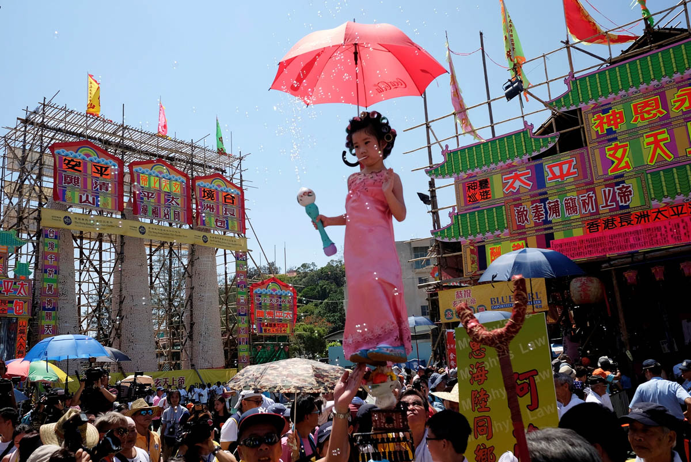

 Cheung Chau Bun Festival is a traditional festival in the island of Cheung Chau. There are many activities includs Bun snatching competition and the show of Parade of floats. Go WikiPedia to have more understanding of this fantastic event in HK!